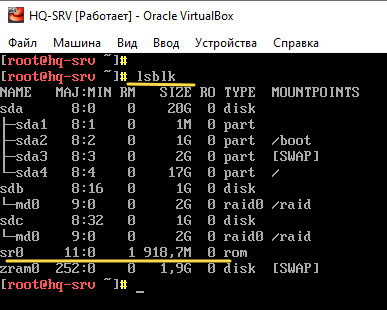
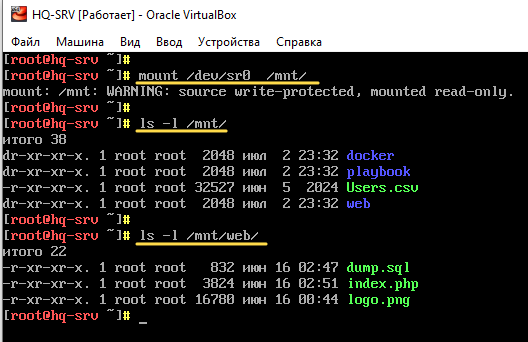
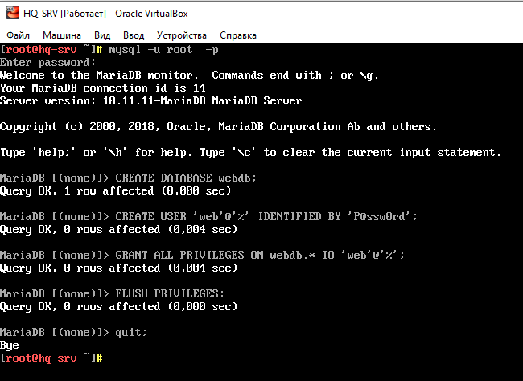
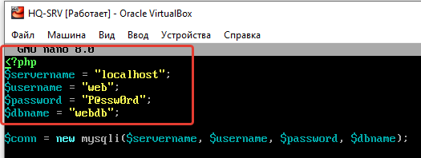
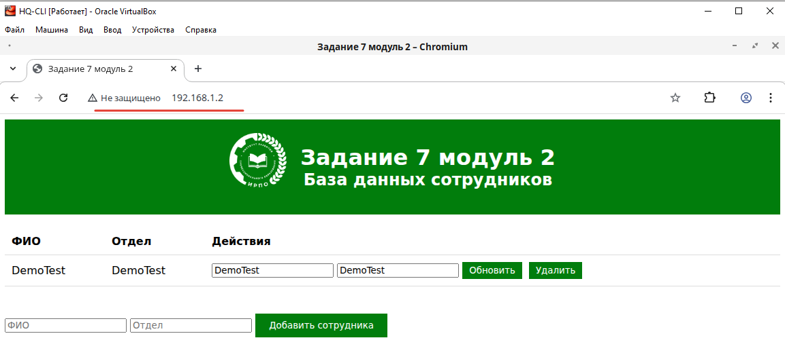

¶ Задание
7. Разверните веб приложение на сервере HQ-SRV:
- Используйте веб-сервер apache
- В качестве системы управления базами данных используйте mariadb
- Файлы веб приложения и дамп базы данных находятся в директории web образа Additional.iso
- Выполните импорт схемы и данных из файла dump.sql в базу данных webdb
- Создайте пользователя web с паролем P@ssw0rd и предоставьте ему права доступа к этой базе данных
- Файлы index.php и директорию images скопируйте в каталог веб сервера apache
- В файле index.php укажите правильные учётные данные для подключения к БД
- Запустите веб сервер и убедитесь в работоспособности приложения
- Основные параметры отметьте в отчёте
¶ Реализация
Виртуальная машина HQ-SRV
Вносим изменения в политики SELinux
Переводим selinux в режим уведомлений. Для этого изменяем содержимое конфигурационного файла
Заменяем текст SELINUX=enforcing на SELINUX=permissive.
Затем выполняем
¶ Установка и настройка веб-сервера Apache
Устанавливаем веб-сервер Apache
Запускаем службу httpd и добавляем ее в автозагрузку
¶ Установка php и дополнительных расширений
Устанавливаем php и дополнительные расширения
¶ Установка и настройка MySQL
Установливаем СУБД MariaDB
Запускаем службу mysql и добавляем ее в автозагрузку
Запускаем встроенный инструмент настройки MariaDB и производим настройку
Устанавливаем пароль root для mariadb. Во всех пунктах вводим Y (Yes)
Смотрим подключен ли cd-rom

Монтируем Additional.iso
Смотрим содержимое Additional.iso

¶ Создание базы данных и импорт данных
Подключаемся к mariadb
Создание базы данных
Создание пользователя
Установка прав пользователя на БД
Оповестить MySQL о текущих изменениях
Выход

Перезапуск mariadb
Импортируем схему и данные из файла dump.sql в базу данных webdb:
¶ Импорт веб приложения
Из директории /mnt/web/ копируем файл index.php и logo.png в /var/www/html/
В файле /var/www/html/index.php необходимо указать учётные данные для подключения к БД:
Открываем файл
Вносим изменения

Перезапускаем службу httpd
Виртуальная машина HQ-CLI
Проверяем доступ до веб приложения введя на HQ-CLI IP-адрес HQ-SRV
